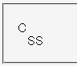
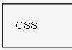

:first-letterなどの擬似要素に対してvertical-alignプロパティを指定しても反映されない。
<style type="text/css">
p#a:first-letter {
vertical-align: 1em;
}
</style>
<p id="a">CSS</p>
CSS
1文字目の 'C' が1文字分上にずれているはずです。
Moz1.0.1での表示（標準モード）
WinIE6.0での表示（標準モード）
WinIE6.0では標準・互換モードともに不具合の発生が確認されました。